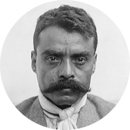

|  | Emiliano ZapataRevolutionary leader,Leading figure in the Mexican revolution and the inspiration of the agrarian movement called Zapatismo. |
Biography:
Zapata was born in the rural village of Anenecuilco in Morelos, in an era when peasant communities came under increasing repression from the small-landowning class who monopolized land and water resources for sugarcane production with the support of dictator Porfirio Díaz
| DATES | EVENTS |
|---|---|
| March 1911 | Zapata's tiny force took the city of Cuautla and closed the road to the capital, Mexico City. |
| February 1913 | Victoriano Huerta deposed and assassinated Madero |
|
|